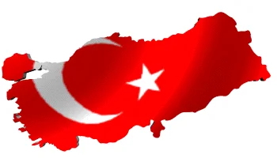

С раннего утра 3 мая в Бочаровом Ручье под Сочи гладили флаги Турции и Германии, резали колбасу и подметали территорию. Ждали высокопоставленных гостей - Реджепа Эрдогана и Ангелу Меркель. Пока канцлер Германии ела "докторскую", которой ее угостил Владимир Путин, кортеж президента Турции привлек внимание правоохранителей и ФСО. Эрдоган разъезжал по Сочи на майбахах без номеров, что грозит водителю штрафом или вовсе лишением прав.
В распоряжении This is оказались фото майбаха Эрдогана без номеров. Комментарии турецкой стороны получить не удалось. А вот сотрудники сочинской ФСО активно обсуждали эту ситуацию.
– Как у тебя? Без проблем сегодня?
– Без проблем. Только одна машина с солнышком шла, думал отсекать или нет. Но не стал - она в кортеже шла.
"Солнышко" - это значит без номеров. Помнится, в 2012 году московская ГИБДД оказалась в таком же конфузном положении. Тогда на инаугурацию без номеров мчался мерседес Путина.
Согласно главе 12 части второй КоАП РФ, за отсутствующие номерные знаки водителя ждет наказание в виде штрафа в размере пяти тысяч рублей или лишения прав. Водителя президента России в 2012 году так и не оштрафовали, да и прав не лишили. Вероятно, что наказания избежит и водитель Эрдогана. Но закон все же соблюдать стоит.
Тем более что это не первый визит Эрдогана в Россию. В предыдущий раз он состоялся после восстановления отношений Москвы и Анкары весной 2016 года. И всегда автомобили кортежа президента Турции были с номерами.
Езду без номеров, скорее всего, простят Эрдогану, так как сложные российско-турецкие отношения приобретают особый характер и в полном формате восстанавливаются.
Хотя в ходе встречи с Реджепом Эрдоганом Владимир Путин пошутил по поводу небольшой заминки со стороны турецкой делегации, члены которой немного опоздали.

"Не хотят твои работать", - сказал президент, как бы намекая на настрой встречи. Реакции со стороны турецкого лидера не последовало.
В ответ турецкий лидер лишь сказал, что Россия и Турция проходят через период, когда на их плечах лежит очень серьезный груз, большая ответственность. Но Эрдоган уверен, что шаги, которые будут предприняты, изменят судьбу всего Ближневосточного региона.
Об этом он сказал совсем не случайно: главные противоречия в российско-турецких отношениях связаны с сирийским вопросом, на разрешение которого страны имеют прямо противоположные точки зрения.
Напомним, что именно это стало причиной ухудшения отношений Москвы и Анкары. В ноябре 2015 года турецкие военные на границе с Сирией сбили российский самолет, открыв огонь без предупреждения. Один из летчиков погиб. Турецкая сторона обвинила Россию в незаконном пересечении своей границы. Тогда Владимир Путин назвал это ударом в спину, так как Турция считалась одной из самых дружественных в условиях санкций России стран. Позже выяснилось, то что Анкара настаивает на досрочной отставке законного президента Сирии Башара Асада, который пользуется безоговорочной поддержкой Москвы. Чтобы сохранить официальную власть в Сирии, Россия направила туда своих военных.
С момента восстановления отношений, а точнее с весны 2016 года, Москва и Анкара пытаются договорится. Ведь от этого зависит решение ряда других вопросов, касающихся, в частности запрета России на ввоз турецких помидоров, а также введения Турцией высоких пошлин на пшеницу. Впрочем, есть и более глобальные проекты, такие как "Турецкий поток", судьба которых во многом также зависит от политической ситуации.
Однако, как считает ряд экспертов, стороны вряд ли придут к каким-либо договоренностям, так как принципиально их позиции не изменились. Россия не собирается отказываться от поддержки Башара Асада, а Турция вряд ли перестанет требовать его отставки. В этом случае водителя Эрдогана можно оштрафовать или вовсе лишить его прав.